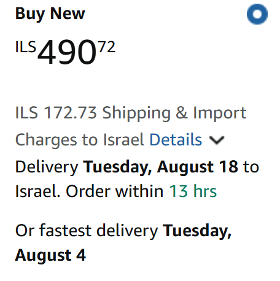

קניתם מוצר באמזון, הגעתם לקאסה — ואז בום: $18 משלוח לישראל.
זה קורה לכולם. אבל האמת היא שמאות אלפי מוצרים באמזון מגיעים לישראל בחינם לגמרי — צריך רק לדעת איך לזהות אותם לפני שמוסיפים לעגלה.
במאמר הזה תלמדו בדיוק איך לעשות את זה, צעד אחר צעד.
✅ בקצרה — מה חשוב לדעת
- חפשו "FREE Shipping to Israel" בסעיף Delivery בדף המוצר לפני כל קנייה
- Sold by Amazon + Shipped by Amazon = סיכוי הכי גבוה למשלוח חינם
- כתובת משלוח ישראלית חייבת להיות מוגדרת בחשבון — בלי זה אמזון מחשבת משלוח לארה"ב
- מוצר "זול" ב-$22 עם משלוח $15 יקר יותר מגרסה ב-$27 עם משלוח חינם
1. חפשו את המילה "FREE" ליד אפשרויות המשלוח
הדרך הכי פשוטה: כנסו לדף המוצר, גללו למטה לחלק "Delivery" או "Ships to", ובדקו מה כתוב.
אם כתוב:
- ✅ FREE Shipping to Israel — אתם מוגנים, המשלוח בחינם
- ✅ FREE with Prime — אם יש לכם Prime, בחינם
- ❌ $X.XX shipping — תצטרכו לשלם
טיפ חשוב: הסכום מחושב לפי כתובת המשלוח שלכם. אם עדיין לא הגדרתם כתובת ישראלית, אמזון לא יראה לכם את מחיר המשלוח הנכון. לכו ל-Account → Addresses והוסיפו כתובת ישראלית.
ככה זה נראה בפועל בעמודת הקנייה, מתחת למחיר. שני המסכים הבאים לקוחים מאותו אזור בדיוק בעמוד המוצר, וההבדל ביניהם הוא מילה אחת:
✅ יש משלוח חינם

❌ אין משלוח חינם
שימו לב לנקודה שנייה שעולה משני הצילומים: דמי היבוא (Import Charges) מופיעים כבר כאן, בעמוד המוצר. כלומר הם נגבים מראש בקופה ולא בהגעת החבילה — בשני המקרים.
2. השתמשו בפילטר "Free International Shipping"
הרבה אנשים לא יודעים שיש פילטר ספציפי לזה:
- חפשו כל מוצר בתיבת החיפוש
- בצד שמאל, תחת "Shipping" — סמנו "FREE International Shipping"
- התוצאות יסוננו אוטומטית למוצרים שמגיעים בחינם
הפילטר הזה מסנן מוצרים שמוכרים על ידי אמזון ישירות (FBA) ושעוברים את סף המחיר לחינם. לרוב מדובר במוצרים מעל $25–$49 תלוי בקטגוריה.
3. בדקו מי המוכר — אמזון או מוכר צד שלישי
זה אחד הגורמים הכי חשובים שאנשים מפספסים.
| סוג מוכר | משלוח חינם לישראל? |
|---|---|
| Sold by Amazon | ✅ לרוב כן (מעל סף מסוים) |
| FBA — Fulfilled by Amazon | ✅ לרוב כן |
| Sold by [מוכר פרטי] | ❌ לרוב לא, או יקר |
| Ships from [מוכר פרטי] | ❌ לרוב לא |
איך רואים? מתחת לכפתור "Add to Cart" יש שורה קטנה שכתוב בה "Ships from" ו-"Sold by". אם שניהם כתוב בהם "Amazon" — סיכוי גבוה למשלוח חינם.
מקור: Amazon Help — International Shipping Rates & Information.
חשבתם ש-Prime מבטיח משלוח חינם לישראל? — מה זה Amazon Prime לישראלים באמת ←
4. בדקו את מחיר המוצר מול הסף
אמזון לא מפרסמת רשמית את הסף לכל קטגוריה, אבל לאורך השנים התגבשו כמה כללי אצבע:
- מתחת ל-$25 — כמעט תמיד יש עלות משלוח
- $25–$49 — תלוי בקטגוריה ובמוכר
- מעל $49 — בדרך כלל חינם אם sold/shipped by Amazon
לכן: אם אתם מתלבטים בין שני מוצרים דומים — אחד ב-$22 ואחד ב-$27 — לפעמים הזול יוצא יקר יותר כי מוסיפים $8–$12 משלוח.
5. בדקו בדסקטופ — ולא רק באפליקציית המובייל
אחת הטעויות הנפוצות: לבדוק מחיר משלוח באפליקציית אמזון במובייל ולהניח שזה הסיכום הסופי.
האמת: ממשק הדסקטופ מציג פירוט מלא יותר של עלויות המשלוח. באפליקציה, לפעמים מחיר המשלוח מתווסף רק בשלב ה-checkout ולא מוצג בדף המוצר עצמו.
מה לעשות:
- לפני קנייה חשובה — פתחו את אותו מוצר בדסקטופ ובדקו שוב
- ודאו שהכתובת הישראלית שלכם מוגדרת גם בדסקטופ
- עברו לשלב ה-checkout המלא (לחצו "Proceed to checkout") כדי לראות את עלות המשלוח הסופית לפני תשלום
לפעמים דווקא בשלב הראשון של ה-checkout מופיעה ההטבה "FREE Shipping to Israel" — ולא בדף המוצר.
כמה עולה משלוח מאמזון לישראל כשאין משלוח חינם?
כשאין משלוח חינם, העלויות יכולות להשתנות משמעותית לפי משקל, גודל וסוג המוצר.
| סוג מוצר | עלות משלוח משוערת |
|---|---|
| מוצר קטן (0–0.5 ק"ג) | $8 – $15 |
| מוצר בינוני (0.5–2 ק"ג) | $15 – $30 |
| מוצר גדול / כבד | $30 – $80+ |
בנוסף, יש לקחת בחשבון: מעל $75 ההזמנה כבר לא פטורה ומתווספים לה מכס ומע"מ. אבל בניגוד למה שהרבה קונים מצפים — אמזון גובה את החיובים האלה מראש, בקופה. כלומר גם בהזמנה של $150 הסכום שאתה משלם בסיום הרכישה הוא הסכום הסופי: אין חיוב נוסף בכניסה לישראל ואין דמי שחרור בדואר. חשוב להסתכל על השורה הסופית בקופה ולא על מחיר המוצר בלבד.
לפירוט מלא על מכס ומע"מ — מדריך מכס ומע"מ על קניות מאמזון ←
טעויות נפוצות שגורמות לפספוס משלוח חינם
לאורך השנים ראינו כמה טעויות שחוזרות על עצמן:
טעות 1: לא הגדרתם כתובת ישראלית בחשבון
אמזון מחשבת עלות משלוח לפי כתובת המשלוח שנשמרה בחשבון, לא לפי מיקומכם בפועל. אם הכתובת שמורה היא אמריקאית — אמזון תציג מחיר משלוח לארה"ב, ולא לישראל.
פתרון: כנסו ל-Account → Manage Addresses והוסיפו כתובת ישראלית כברירת מחדל.
טעות 2: מתבלבלים בין "Eligible for FREE Shipping" לבין "FREE Shipping to Israel"
"Eligible for FREE Shipping" מתייחס לרוב למשלוח בתוך ארה"ב לחברי Prime. זה לא אומר שאתם מקבלים משלוח חינם לישראל. חפשו ספציפית את הציון "FREE Shipping to Israel" או "FREE International Shipping" כדי לוודא.
טעות 3: קונים ממוכר FBM במקום FBA
מוכר שמשלח בעצמו (Fulfilled by Merchant — FBM) יכול להציע מחיר מוצר נמוך יותר, אבל לגבות $15–$30 משלוח לישראל. מוכר FBA, לעומת זאת, מציע לרוב משלוח חינם אם עוברים את הסף.
תמיד בדקו: מי שולח? אמזון או המוכר עצמו?
טעות 4: שוכחים לחשב מכס
גם אם המשלוח חינם — מוצרים מעל $75 עשויים לחייב מכס ומע"מ בכניסה לישראל. כדאי לחשב את המחיר הסופי כולל מיסים לפני שמחליטים לקנות.
לפירוט מלא על מכס ומע"מ על הזמנות מאמזון — מדריך מכס ומע"מ על קניות מאמזון ←
איך אמזון מחליטה מי מקבל משלוח חינם לישראל?
אמזון לא מפרסמת את כל הקריטריונים, אבל על בסיס ניסיון של שנים ניתן לזהות את הגורמים העיקריים:
- משקל ומידות המוצר — מוצרים קלים וקומפקטיים מועדפים למשלוח חינם בינלאומי. ספר, אוזניות קטנות או מטען USB — סיכוי גבוה. מסך 27 אינץ'? לא תקבלו משלוח חינם.
- ערך המוצר — מוצרים מעל $25–$49 נהנים לרוב מסף חינם. אמזון מרוויחה מספיק מהמכירה כדי לספוג את עלות המשלוח הבינלאומי.
- מדינת היעד — ישראל נמצאת ברשימת המדינות הנתמכות ב-Amazon Global, מה שמאפשר משלוח חינם. לא כל מדינה בעולם נהנית מאותה הטבה.
- עומס מחסן ושרשרת אספקה — בתקופות עמוסות (לפני חגי נובמבר-דצמבר) אמזון עשויה לצמצם זמינות משלוח חינם לחו"ל.
- היסטוריית המוכר — מוכרי FBA שמכרו היסטורית מוצרים ברווחיות טובה עשויים לקבל תנאים יותר נוחים במדיניות המשלוח.
המשמעות המעשית: אין דרך לחזות בוודאות מתי מוצר ספציפי יקבל משלוח חינם — אבל יש דפוסים ברורים שכדאי לזהות.
הבעיה: זה משתנה כל הזמן
גם אם בדקתם ומצאתם שמוצר מגיע בחינם — זה לא מובטח לנצח.
אמזון משנה מדיניות משלוח:
- לפי עונה (בלאק פריידי, קיץ, חגים)
- לפי מלאי ומיקום המחסן
- לפי שינויים במדיניות המוכר
כלומר: מוצר שהיום מגיע בחינם — מחר יכול לעלות $14 משלוח.
וההפך גם נכון — מוצר שנראה יקר היום, יכול לחזור למשלוח חינם מחר. לכן כדאי מאוד לא לפסול מוצר רק כי המשלוח יקר ברגע הבדיקה — לפעמים שבועיים של המתנה חוסכים $15–$20.
זו לא תחושה סובייקטיבית — אמזון עצמה מציינת שהזכאות נקבעת דינמית:
"Eligible products for free international shipping are determined dynamically based on fulfillment center availability, carrier rates, and participation in the Amazon Global Store program."
— Amazon Help Center — International Shipping Rates & Information
מתי כדאי להמתין לפני הקנייה?
לא תמיד כדאי לקנות מיד. ישנן תקופות שנתיות שבהן אמזון מרחיבה משמעותית את זמינות המשלוח החינם הבינלאומי:
- Prime Day (יולי) — אירוע המבצעים הגדול של אמזון. מוצרים רבים שבמהלך השנה עולים $12–$18 משלוח מציעים לפתע משלוח חינם לישראל.
- בלאק פריידי ו-Cyber Monday (נובמבר) — שיא עונת הקניות. אמזון מציעה הנחות משמעותיות ולעיתים ספי משלוח חינם נמוכים יותר.
- ינואר–פברואר — לאחר עונת החגים, אמזון לעיתים מציעה תנאי משלוח נוחים יותר כדי לפזר מלאי.
אם אתם לא במצב דחוף — כדאי לבדוק האם המוצר שאתם רוצים נמצא בסמוך לאחת מהתקופות האלה. המתנה של שבועיים עד חודש יכולה לחסוך $10–$20 ולהוריד את המחיר הכולל משמעותית.
כדי לא לפספס את הרגע שהמשלוח מתאפס — כדאי להפעיל מעקב אוטומטי על המוצר.
הטריק: הוספת פריט קטן לעגלה
אחד הטריקים הפחות ידועים: אם ההזמנה שלכם קרובה לסף המשלוח החינם אבל לא מגיעה אליו — הוספת פריט זול יכולה לעבור את הסף ולבטל את עלות המשלוח של שאר הפריטים.
דוגמה מספרית:
- קניתם ספר ב-$44 — משלוח $12
- הוספתם סוללות AA ב-$6 — עברתם את $49
- המשלוח על הספר: חינם ✅
- שילמתם $50 במקום $56 — חסכתם $6 בפועל
כמובן שזה עובד רק על פריטים שמשתתפים בתוכנית המשלוח החינם. חפשו פריטים קטנים שאתם ממילא צריכים — סוללות, כבלים, מגנטים, ציוד משרדי — ובדקו אם הם FBA.
הפתרון: מעקב אוטומטי
במקום לבדוק ידנית כל יום — AMZFREEIL עושה את זה בשבילכם.
המערכת סורקת מוצרים באמזון ושולחת לכם התראה במייל ברגע שמוצר שבחרתם עובר למשלוח חינם לישראל.
איך זה עובד:
- מוסיפים מוצר לרשימת המעקב
- AMZFREEIL בודקת אותו אוטומטית
- קיבלתם מייל → הזמנתם → חסכתם
לא צריך לבדוק בעצמכם כל יום. הכלי עושה את זה בשבילכם — ראה מדריך ←
האם ניתן להזמין מאמזון לישראל?
כן — אמזון שולחת לישראל, ואפשר להזמין ישירות מ-amazon.com בלי חברת שילוח מתווכת ובלי כתובת בארה"ב. ישראל נכללת בתוכנית Amazon Global, כך שחלק ניכר מהמוצרים באתר מציגים אפשרות משלוח ישירה לכתובת ישראלית כבר בעמוד המוצר.
מה שכן — לא כל מוצר נשלח לישראל. אמזון מסננת את המשלוח הבינלאומי לפי סוג המוצר ולפי המוכר. מוצרים שנמכרים ונשלחים על ידי אמזון (FBA) נשלחים לישראל ברוב המקרים; מוצרים ממוכר חיצוני שמשלח בעצמו (FBM) לרוב לא. בנוסף יש קטגוריות חסומות לגמרי — נוזלים דליקים, סוללות ליתיום גדולות, מוצרי אירוסול ועוד.
שני הספים שכדאי לזכור לפני שלוחצים על הקנייה:
- סף המשלוח החינם — $49. בהזמנות של מוצרים זכאים מעל הסכום הזה אמזון מוותרת על דמי המשלוח לישראל. מתחת לסף, המשלוח בתשלום.
- סף הפטור ממיסים — $75. עד הסכום הזה ההזמנה פטורה ממכס וממע"מ. מעליו מתווספים מכס ומע"מ — ואמזון גובה אותם מראש בקופה, כך שאין הפתעות בהגעת החבילה.
הדרך המעשית לבדוק: הוסיפו כתובת ישראלית לחשבון עוד לפני החיפוש. אמזון מחשבת זמינות ומחיר משלוח לפי כתובת המשלוח השמורה, ובלי כתובת ישראלית תראו מחירים של משלוח פנים-ארצי בארה"ב שאין להם שום קשר למה שתשלמו בפועל.
לעומק — מכס ומע"מ על קניות מאמזון ← · מוצרים שאסור לייבא לישראל ←
שאלות נפוצות
האם אמזון שולחים לישראל?
כן. אמזון שולחת ישירות לכתובת ישראלית מ-amazon.com דרך תוכנית Amazon Global, בלי חברת שילוח מתווכת ובלי כתובת בארה"ב. עם זאת לא כל מוצר נשלח: פריטים שנמכרים ונשלחים על ידי אמזון (FBA) מגיעים לישראל ברוב המקרים, ואילו מוצרים ממוכר חיצוני ששולח בעצמו (FBM) לרוב לא.
כמה עולה משלוח מאמזון לישראל?
כשאין הטבת משלוח חינם, העלות נקבעת לפי משקל וגודל: כ-$8–$15 למוצר קטן, $15–$30 למוצר בינוני ו-$30–$80 ומעלה למוצר גדול או כבד. בהזמנת מוצרים זכאים מעל $49 המשלוח לישראל חינם.
האם Amazon Prime נותן משלוח חינם לישראל?
לא. Amazon Prime רלוונטי בעיקר לארה"ב ולאירופה.
האם אמזון שולחת לכל מקום בישראל?
כן — לכל כתובת ישראלית, כולל ערים, מושבים וקיבוצים.
כמה זמן לוקח משלוח חינם לישראל?
בדרך כלל 7–21 ימי עסקים. משלוח מהיר יותר זמין אבל בדרך כלל בתשלום.
האם יש מע"מ על הזמנות מאמזון?
בהזמנות עד $75 לא נגבים מכס ומע"מ. מעל סכום זה עשויים לחול מיסים בהתאם לחוקי הייבוא.
מה ההבדל בין "Eligible for FREE Shipping" ל-"FREE Shipping to Israel"?
"Eligible for FREE Shipping" מתייחסת למשלוח חינם בתוך ארה"ב בלבד עבור חברי Prime. "FREE Shipping to Israel" היא ההוראה הרלוונטית לישראלים — אם לא מופיעה המילה "Israel", המשלוח לישראל אינו חינם.
האם הכתובת השמורה בחשבון משפיעה על חישוב המשלוח?
כן. אם כתובת ברירת המחדל בחשבון היא אמריקאית, אמזון תחשב מחיר משלוח לארה"ב ולא לישראל. יש לעדכן את כתובת המשלוח לישראל לפני בדיקת המחיר.
האם מחיר המשלוח מוצג לפני התשלום הסופי?
כן. אמזון מציגה את כל עלויות המשלוח בדף ה-Checkout לפני אישור התשלום. ניתן לבדוק מחיר משלוח מדויק על ידי הוספת מוצר לעגלה ובדיקת סיכום ההזמנה.
האם יש הבדל בין צפייה באמזון מהמובייל לבין דסקטופ?
כן. ממשק הדסקטופ מציג פרטי משלוח מלאים יותר, כולל "FREE Shipping to Israel" בצורה ברורה. אפליקציית המובייל לעיתים מקצרת את פרטי המשלוח. מומלץ לוודא פרטי משלוח בדסקטופ לפני רכישה גדולה.
מה הסכום המינימלי לקבלת משלוח חינם?
ב־Amazon, הסכום המינימלי למשלוח חינם לישראל הוא בדרך כלל כ־$49. חשוב לדעת שההטבה חלה רק על מוצרים המסומנים כזכאים למשלוח חינם, ולכן גם אם תעברו את הסכום הנדרש, רק פריטים משתתפים יישלחו ללא עלות, בעוד אחרים עדיין עשויים להיות כרוכים בדמי משלוח.
האם כל המוצרים נשלחים לישראל?
לא. רק מוצרים שמשתתפים ב-Amazon Global ונשלחים על ידי אמזון עצמה (FBA) זכאים בדרך כלל למשלוח חינם לישראל.
מה ההבדל בין FBA ל-FBM מבחינת משלוח לישראל?
FBA (Fulfilled by Amazon) — אמזון אורזת ושולחת בעצמה, כולל זכאות למשלוח חינם לישראל. FBM (Fulfilled by Merchant) — מוכר פרטי שולח בעצמו; לרוב אינו מציע משלוח חינם לישראל ולוקח יותר זמן.
האם יש עלות נוספת בקבלת החבילה מאמזון בישראל?
לא. אמזון מיישמת "Duties & Taxes Included" לישראל — המחיר שמשלמים בעת הרכישה הוא המחיר הסופי. אין תשלום נוסף בדואר ישראל ואין דמי שחרור מכס.
מה זה Amazon Global ואיך זה קשור למשלוח לישראל?
Amazon Global היא תוכנית המשלוח הבינלאומי של אמזון, המאפשרת שליחת מוצרים מאחסני FBA ליותר מ-100 מדינות, כולל ישראל. רק מוצרים המשתתפים ב-Amazon Global זכאים למשלוח חינם לישראל.
סיכום
בדיקת משלוח חינם לפני קנייה באמזון זה לא מדע טילים — אבל צריך לדעת איפה לבדוק:
- ✅ בדקו את חלק ה-Delivery בדף המוצר
- ✅ השתמשו בפילטר Free International Shipping
- ✅ וודאו שהמוצר Sold/Shipped by Amazon
- ✅ שמרו על סף מחיר מינימלי
- ✅ בדקו בדסקטופ ולא רק במובייל
- ✅ הימנעו מהטעויות הנפוצות (כתובת שגויה, FBM, בלבול בין סוגי ה-"FREE")
- ✅ עקבו אוטומטית עם AMZFREEIL
כל הבדיקות האלה לוקחות פחות מדקה — ויכולות לחסוך לכם $10–$30 על כל קנייה. עם מעקב אוטומטי, אתם גם לא מפספסים את הרגע שמוצר שרציתם חוזר עם משלוח חינם.
רוצים מדריך מקיף יותר לקניות באמזון מישראל? — המדריך המלא לקניות באמזון לישראל 2026 ←
🔔
רוצה לדעת מתי מוצר שאתה רוצה חוזר עם משלוח חינם לישראל?
הכלי שלנו מנטר מוצרים מאמזון ושולח התראה ישר למייל שלך.
נסה חינם עכשיו ללא כרטיס אשראי · עובד מיד